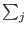
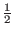

The qureg class, my quantum memory register, is defined in qureg.C. When a quantum memory register is constructed it takes as input the number of qubits which it will contain. In my implementation quantum memory register of n bits requires 2n complex numbers to represent. This is because a register of n bits can exist in any one of 2n base states, and a quantum register may exist in any superposition of those base states. I use one complex number per base state to describe the probability of that state being measured.
For example, if a quantum register has 3 bits it can exist in any one of the following states:
If I take these values to be binary numbers where the most significant bit is the left most bit then these states correspond to the numbers 0,1,2,3,4,5,6,7. There are 23 = 8possible base states.
I follow the convention that the probability of measuring the j'th state whose complex amplitude is wj is | wj|2/| wj|2. I also ensure throughout that algorithm that the | wj|2 are equal to 1, so the probability of measuring the j'th state is | wj|2. Since my qureg class is only being used in Shor's algorithm, any given base state that is measured will correspond to an integer value, for example, in steps 7 and 9 we will measure only integer values. These the base states of our n bit quantum register can be thought of as being the integers 0 through 2n-1. In my code a quantum register of size n will be represented by an array of complex numbers of size 2n. The value stored at the j'th array position is the complex probability amplitude associated with measuring the number j. For example, in a quantum memory register of size 2 that contains an equal superposition of the numbers 0-3 would be represented by:
Observe that the probability of measuring any given state is | wj|2 = 2 +02 = 1/4.
If we attempt to measure this register, we will with equal probability get the number 0,1,2,3. Let us assume we measure the state and get the value 2, this has the effect of collapsing all probabilities not measured to 0, so the new state of our quantum register is:
If we were to measure this register again we would measure the value 2 without fail.
Sometimes during the course of operation we cause a state to exist in the quantum memory register where the sum over the squares of the probability amplitudes is not 1, for example a quantum register could be in the state:
We would expect that when measured 0 and 1 would be equally likely outcomes, however we would also like for simplicity to have | wj|2 be the probability of measuring the j'th state. To accommodate this desire the qureg class contains a subroutine which will normalize the probability amplitudes, such that sum of the | wj|2 over all j's is one.
The qureg class also allows the state of the register to be set to any arbitrary state. This functionality is used in steps 5, 6, 7, and 8 of Shor's algorithm as described above. The quantum memory register class has two member functions which do things that a real quantum memory register could not do.
The first such function is the Dump() function which dumps the entire state information of the register without collapsing it, and is included for debugging. The reason why a real quantum memory register could not do such a thing is that to detect the state information of a real quantum memory register without applying some measurement, which would collapse the state vector of the quantum memory register into one of the base states.
The second such function is the GetProb(state) which gets the probability amplitude of any given state. This function suffers from the same problems as the Dump function, it is impossible to attain information about the state vector without causing it to collapse into one of the base states. The GetProb function is used in the main program to calculate the discrete Fourier transform in step 8. While a real quantum computer could not use this information in step 8, a real quantum computer would not need to. In a real quantum computer the Fourier transformation would take place in one step, and the transform function would take as its argument a state which could in general be any superposition of base states. This function is used to simulate this use of a function which takes a superposition of states as its argument.